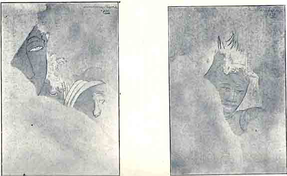

Newly-discovered
Frescoes at Kanchipuram
BY M. S. SUNDARA SARMA, B.A.
Culture, like a crystal, has its axes of growth. If one is stunted the result is a deformity which not only vitiates the whole but takes away the beauty and value of it all. The symmetrical development of all the faces enhances the beauty and value to a very marked extent. Modern Indian culture, whatever that may be, is utterly lacking in aesthetic taste and creative imagination generally. Inspite of all tall talk snobbishness only is fully rampant. Whether that is the result or cause of the present political unrest depends upon the angle of vision. No country in the world attained to self-eminence which had not Art as one of the vital forces that prompted its growth and civilisation. The glorious culture of ancient India is nowhere more apparent than in what can be gleaned from the few relics of her ancient treasures handed down to the present times.
Even the few priceless relics found here and there would have perished into oblivion but for the enthusiasm and sincere admiration of especially those for whom this country was not a land of birth. Eleven years ago the beautiful frescoes at Sittannavasal were discovered by Mr. Gopinatha Rao, casually, and public attention to the same was drawn by Prof. Dubreuil of Pondicherry. To the Madras Mail should be given the credit of being the first journal, to reproduce and publish in colours one of the dancing figures from these frescoes. But what has the country been doing all along? Excepting a few enthusiastic individuals who can be counted on one's fingers, how has the country benefited itself by the discovery? What about the very cave in which the priceless treasure is located? With regard to the very facet of the pillar wherein is located the dancing figure that was reproduced by the Mail Annual, the delicate brush lines of the master-artist have been marred ruthlessly by the crude brush, probably of the census enumerator whose only paint is black tar, with the result that you find there, in hideous prominence, the figure 165 with something more added on to it! Such is the real taste or call it what you will, of the present-day educated people of India. What do people who glory in adorning their walls with calendar pictures or cheap tenth-rate oleographs know or care for the real masterpieces of Art?
And now, Prof; Dubreuil of Pondicherry, to whom this time the credit of the real discovery is undoubtedly due, has literally exposed and brought to our notice the existence of real old and equally good frescoes at Kanchipuram. With my Intimacy with every hair-breadth of the Sittannavasal frescoes, I flew to the scene of this new discovery recently, to have darsanam of the frescoes. The thick coats of plaster, evidently due to the misguided restoration of the Archeological Department, which the enthusiastic French historian of the Pallavas had removed in order to render visible the underlying frescoes, were lying about in the very place in which they had been thrown out by the Professor. Though it comes under the Public Monuments Protection Act, the Kailasanatha temple is a neglected one, where moth and rust have been allowed to corrupt. The paintings exposed are sure to suffer a good deal if neglected even for a short time; because unlike at Sittannavasal, they are in the vicinity of one of the chief centres of South Indian pilgrimage. These pictures are marvellous and are executed in the very identical and definite style in which the Sittannavasal frescoes are executed. The technical similarity is such that we may safely infer and presume an oneness of hand in both the places. Much more lies buried under the heartless coats of white washing which has to be removed very very carefully to render what is hidden visible. The temptation of further discovery, aping the sincere and honest efforts of the French Professor, may prove really dangerous as well as disastrous and should be forthwith guarded against by those responsible. What has been already exposed is very little; only five heads of which only one is whole, the right half of a masculine torso, a fore-arm and three fingers of a hand. A panel with two chombus or vases may also be seen. Besides there are many undecipherable portions belonging to drapery or figure here and there. In other places you find traces of crude brush lines evidently of far later date, out which nothing could be made.

|
Fig. I |
Fig. II |
In the real frescoes that are visible, unlike at Sittannavasal, the lines are clear and sharp and the colouring bright and rich. The linear draughtsmanship has attained a masterly perfection wherein lines flow in gentle curves apparently without any effort. All the heads seen are masculine but have charm, grace and dignity. One of them, (Fig. I) the biggest and perhaps the best, is half eaten away. The left eye therein sits charmingly over the left cheek and is full of pathos and feeling revealing a whole world of its own. The three more pairs of eyes are all living, enhancing the facial expression in each case. Joy, contemplation and depth are severally and beautifully expressed even in the very few examples we have at present.
I am no ‘historian’ and my concern is not with dates or names and hence I do not care to try to fit these frescoes into any category. No doubt the French Professor's idea that these frescoes are Hindu is evidently because they are found in a temple in the central shrine of which you have a huge Manushya Lingam! Otherwise these frescoes would have been classified as either those of the Jains or the Buddhists as is the wont in such cases! But may I venture to ask as to who truly knows whether the Lingam is really Hindu in origin?
Of course I have had my personal longing satisfied in seeing these frescoes immediately after discovery and copying them, and as I write these few lines they are hanging round me on the walls along with my copies of the frescoes at Sittannavasal. But what is the country going to do with this new discovery? Will the old monument at Kanchipuram be cherished and preserved from further ruin and neglect or vandalism? Who is going to come forward to take real interest and care regarding these precious South Indian finds and make them more known so that they may inspire all those who can be inspired? Will the Ministers of Education or the universities that have Fine Arts in their curricula take the necessary initiative, so that each school and college in the country may have its blank and uninspiring walls changed into panels of inspiration by revealing the glory of ancient India with the help of copies of these real old frescoes?
BACK